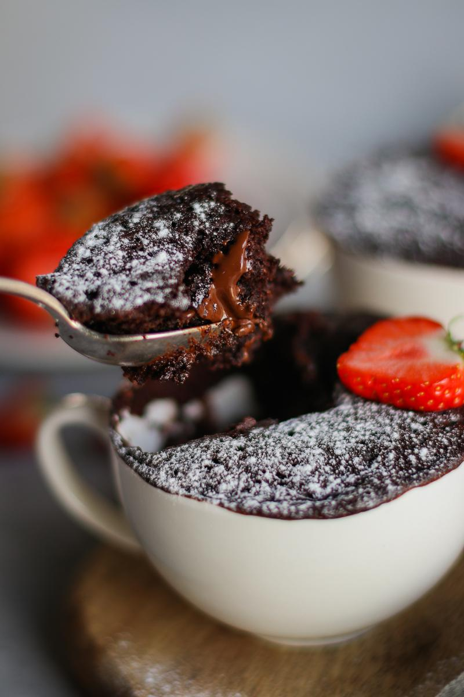

Double Chocolate Mug Cake

- 🍽️Servings: 1
- 🍝Total time: 7 min
- ⏱️Prep time: 5 min
- 🧑🏼‍🍳Cook time: 2 min
Ingredients
- 2 Tbsp (17 g) all-purpose flour
- 2 Tbsp (13 g) Dutch processed cocoa powder
- 2 Tbsp (28 g) granulated sugar
- ¼ tsp baking powder
- 1 pinch salt
- 3 Tbsp (45 mL) unsweetened soy milk
- 1 Tbsp (15 mL) vegetable oil
- ¼ tsp pure vanilla extract
- 0.7 oz (20 g) dairy-free dark chocolate
Optional toppings
- fresh berries
- powdered sugar
- vegan vanilla ice cream
Directions
- In a large microwave-safe mug, mix together the flour, cocoa powder, sugar, baking powder, and salt.
- Then add the milk, oil, and vanilla. Mix until just combined. Be careful not to over-mix.
- Using your fingers, press half of the chocolate into the middle of the cake batter in your mug. This is so you have some melted chocolate in the centre of your cake (yum!). Add the other half of the chocolate to the top of the batter.
- Microwave on high (800 - 900 W) for 2 minutes*, or until a toothpick inserted into the centre comes out clean. If the cake isn't cooked through yet, place it back in the microwave at intervals of 15 seconds.
- Let the mug cake cool slightly, add your desired toppings, and enjoy!
Notes
- * If preferred, bake it in an oven-safe dish at 350°F (180°C) for 15 - 25 minutes, or until a toothpick inserted into the centre comes out clean.
Storage
- Best if enjoyed immediately.
- Transfer to an airtight container and store in the fridge for up to 1 day.